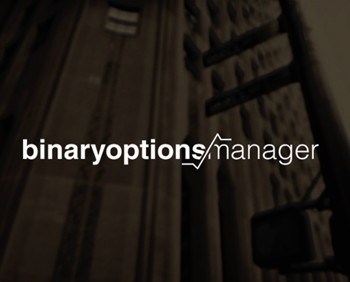
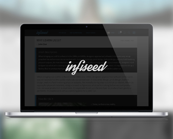
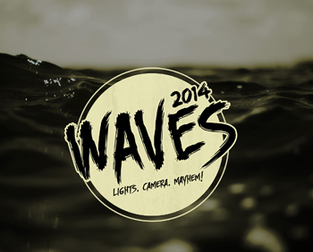
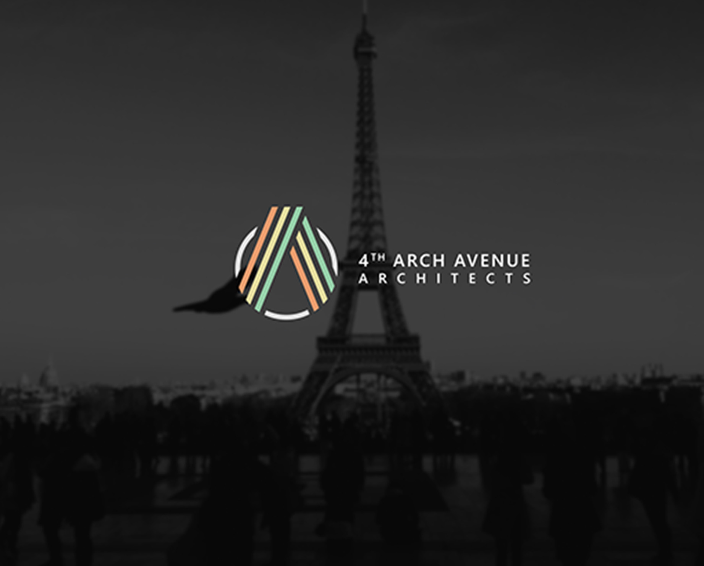
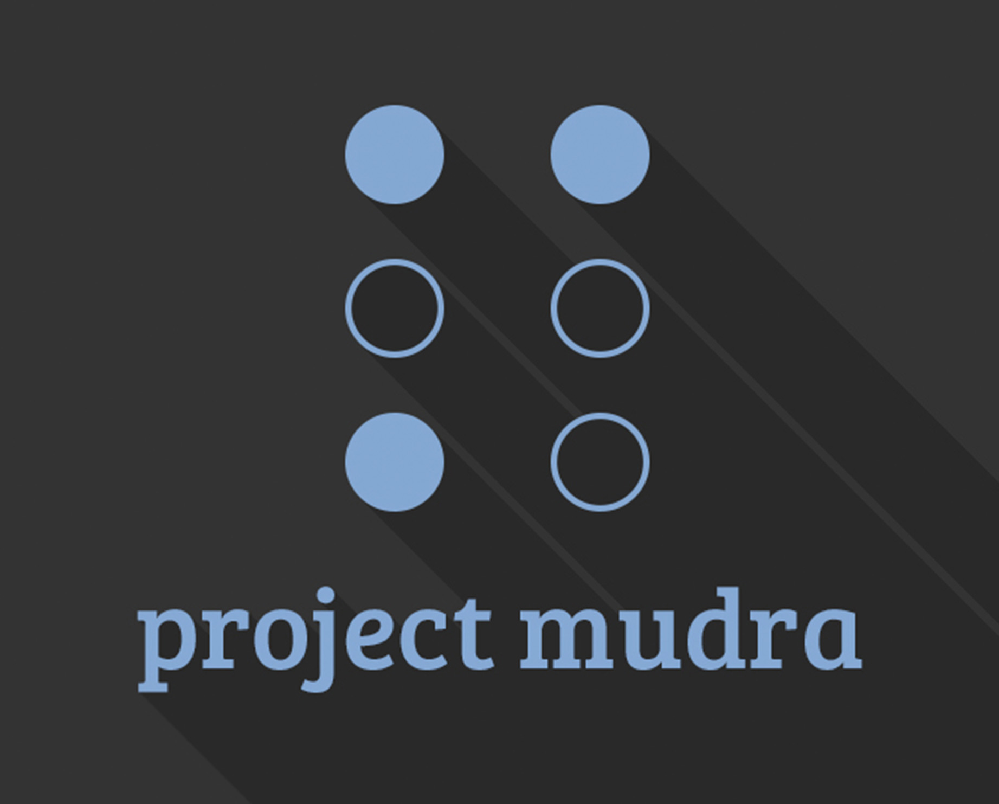

Ravi Agrawal
User Experience Designer

Selected Works

Pixoc
UI/UX design for a version control & collaboration platform.

Binary Options Manager
Web design & illustrations for a Binary Consultancy Firm.

Infiseed
UI Design for a social network that aims at making the world better.

Waves 2014
Branding & web design for BITS Pilani's cultural fest, Waves.

4th Arch Avenue
Logo Design for a Architecture Firm.

Project Mudra
Branding, illustrations and web design for a Braille teaching project.
About
Hello
My name is Ravi Agrawal. I am a Computer Science undergraduate from BITS Pilani, Goa.I'm passionate about conceptualizing new user interaction designs, and building intuitive, robust user experiences - for both web and mobile.
Apart from that, I love music, caffeine, stars, fractals and more.
Experience
Pixoc
2014 July - Present
Design Head | Front End Developer
Zooter Network
2014 October - 2014 December
UI/UX Designer
Binary Options Manager
2014 September - 2014 December
Visual Brand Manager | Web Designer
You can download my
CV here.
CV here.
Contact
You can find me on any of the following social platforms. Send me a message and we can start building beautiful functional interfaces together.